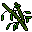

Donkey
para pegar o "Panda" você precisa do "bamboo leaves" e está em macacos1 para fazer esse percurso.

O item Vai ficar nesse local e todo server save ele volta a aparecer ai, estão se não está no local tenta depois do server reiniciar
Home